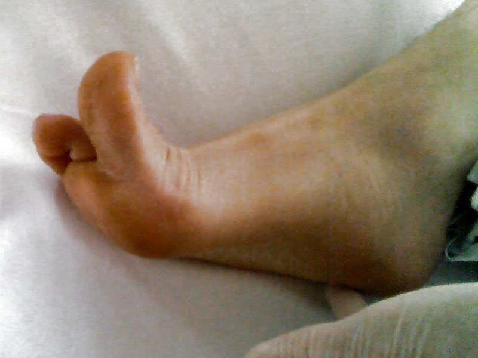
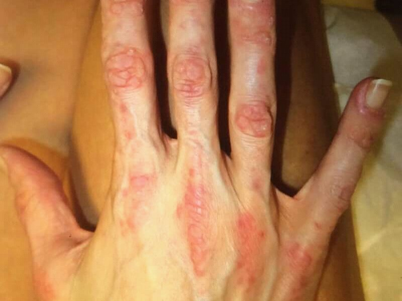
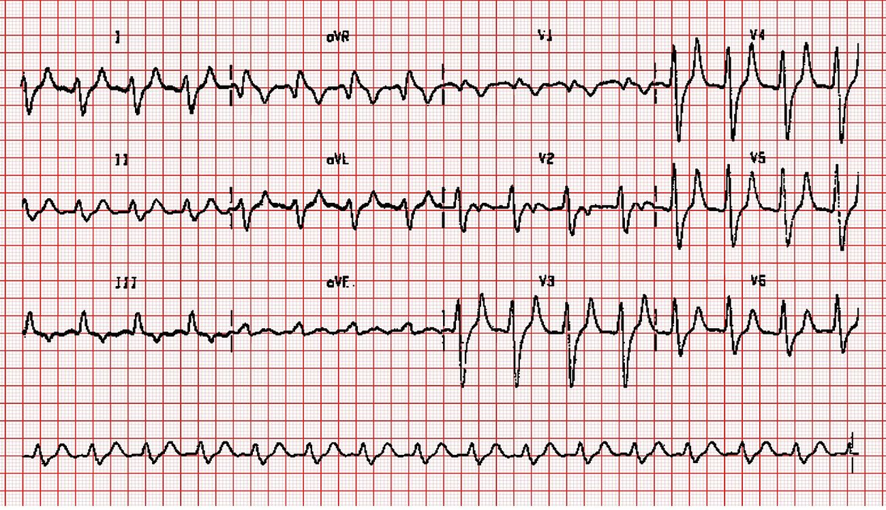

Weakness
“Weak” usually means unwell rather than paralyzed. First sort systemic weakness from a true loss of power, then use the pattern of the weakness to find where the lesion is.
The 3 killers
- A systemic emergency behind the word “weak”: MI, sepsis, hyperkalemia, hypoglycemia
- Stroke, bleed or cord compression: sudden focal weakness, a headache with a hemiparesis, or midline spine pain with weak limbs
- Respiratory failure from neuromuscular weakness: GBS, myasthenic crisis, botulism
Your first 3 moves
- Abnormal vitals? Treat them now and hunt for the systemic cause. New quadriparesis with a low BP is cervical cord sympathetic failure: fluids, pressors, image the neck.
- Real loss of power? Find the level. One UMN sign means the CNS. Reflexes kept means NMJ or muscle. Sudden and focal means image the brain now.
- Watch the breathing. Shallow breaths, a weak cough or neck, pooled secretions: measure the vital capacity. Intubate with rocuronium, not succinylcholine, after > 3 days of denervation.
The 2 tests that matter
They catch the systemic causes. On the neuromuscular side, only CK (myositis, rhabdo) and K (periodic paralysis) help.
Trap UMN signs can be missing in the first hours. Early on, a cord lesion can pass for a peripheral one, so look for a sensory level and check the sphincters.
Who gets admitted
“Weak” usually means sick, not paralyzed. Up to 10% of ED visits are for generalized weakness, mostly in older adults, and over half have a serious cardiac, pulmonary, metabolic or infectious cause.
1 Differentials
Step 1: is this a true loss of power? Most weak patients have a systemic problem that starves nerve and muscle of substrate. Their neurologic exam is non-focal.
- Volume: dehydration
- Composition: glucose, Na, K, Ca; uremia, high CO2, bilirubin, ketoacids
- Red cells: anemia or polycythemia
- Pump: myocardial ischemia
- Vascular tone: vasodilatory shock of any cause
- Demand: infection, endocrinopathy, toxin
- Mitochondria: severe sepsis, toxins
- Global CNS depression: sedatives, stimulant withdrawal
Trap A systemic illness can look focal, especially in a limb already weakened by an old stroke. Real focal findings (lateralized weakness, numbness, an unsteady gait, a cranial nerve deficit) still earn a careful neurologic workup.
Step 2: if it's neuromuscular, find the level. These patients usually have an asymmetric finding on the neurologic exam.
- Cortex / subcortical Ischemic or hemorrhagic stroke
- Brainstem Ischemic or hemorrhagic stroke
- Cord Ischemia; compression by disc, abscess or hematoma
- Nerve Guillain–Barré syndrome
- NMJ Myasthenic or cholinergic crisis, botulism, tick paralysis, organophosphates
- Muscle Rhabdomyolysis
- Cortex / subcortical Tumour, abscess, demyelination
- Brainstem Demyelination
- Cord Transverse myelitis; compression by disc or spondylosis
- Nerve Compressive plexopathy (hematoma, aneurysm); paraneoplastic, vasculitis, uremia
- Muscle Inflammatory myositis
- Diabetes and other endocrinopathies
- Alcohol and other toxins; vitamin deficiency
- Entrapment or external compression; trauma
- Connective tissue disease; paraneoplastic
Rosen's five chapter questions, each a classic pattern, are in the quiz at the end.
2 History
First pin down what “weak” means to the patient. Then ask about time course, distribution, the company the weakness keeps, and exposures.
| Ask about | Why it matters |
|---|---|
| What they mean | |
| Tired and unwell, or can't move a part? | Malaise and fatigue point to the systemic list. A real loss of power is neuromuscular. |
| Time course | |
| Sudden | Ischemia or hemorrhage until imaging says otherwise. |
| Gradual over days to weeks | Demyelination (MS, ADEM) or tumour. Over days, an ascending GBS or a progressive NMJ process (botulism). |
| Fluctuating, worse later in the day | NMJ disorder, e.g. myasthenia gravis. |
| Episodic attacks | Periodic paralysis (a potassium channelopathy). |
| Distribution | |
| Stairs, rising from a chair, lifting arms overhead | Proximal weakness, which points to muscle (myositis, rhabdo) or occasionally NMJ. |
| Clumsy hands, tripping, trouble with fine movements | Distal weakness, which points to peripheral neuropathy. |
| Face, eyelids, double vision, swallowing, speech | Brainstem, NMJ (botulism, myasthenia) or several cranial neuropathies. |
| Red-flag company Red flag | |
| Severe headache | With a hemiparesis: hemorrhage or mass. |
| Midline back pain | With leg weakness: cord compression (disc, abscess, hematoma). |
| Bladder or bowel trouble | A cord or cauda equina lesion, unless something else explains it. |
| Short of breath, can't lie flat, weak cough | Respiratory muscle failure (GBS, crisis), or CHF on the systemic side. |
| Vertigo, nausea, diplopia, dysarthria | Brainstem or posterior circulation. |
| Systemic review | |
| Orthopnea, chest pain; blood loss; urinary symptoms; fever | CHF or ischemia; anemia; UTI (especially with new incontinence in an older adult); infection. |
| Drugs and exposures | |
| Anticoagulants | Hematoma: epidural (cord) or retroperitoneal (plexus). |
| Statins | Rhabdomyolysis. |
| Acetylcholinesterase inhibitors | A myasthenic patient getting worse may be in cholinergic crisis. |
| Aminoglycosides, quinolones, beta blockers | Can worsen NMJ disease. |
| Sedatives; stimulant withdrawal; alcohol | Global CNS depression. Alcohol also causes neuropathy and compression palsies after lying still for hours. |
| Pesticides, ticks, suspect food or wounds | Organophosphates, tick paralysis, botulism. |
3 Physical Exam
Vitals and a general exam come first, because abnormal vitals send you to the systemic list. Then do a neurologic exam built to answer one question: where is the lesion?
| Lesion | Tone and reflexes | Other clues |
|---|---|---|
| UMN: cortex, internal capsule, brainstem or cord tracts | Spastic (arms in extension, legs in flexion), hyperreflexic; pronator drift, Hoffmann, upgoing toe | May be absent in the first hours. One sign is enough to place it in the CNS. |
| LMN: anterior horn, root or nerve | Flaccid, reduced reflexes | Fasciculations, cramps; a dermatome or nerve-territory sensory loss |
| NMJ | Reflexes preserved | No sensory loss; fatigable; ocular and bulbar muscles first; autonomic signs if presynaptic |
| Muscle | Reflexes preserved | Proximal, often tender, no sensory loss |
| Check | Look for → think |
|---|---|
| General | |
| Vitals | Tachycardia, tachypnea, fever, hypothermia or hypotension means a systemic cause, and treat it now. Hypotension with quadriparesis suggests neurogenic shock. |
| Skin, mucosa, heart, lungs | Pallor, dehydration, CHF, infection: is substrate getting to the muscle? |
| Skin, for the rarer clues Beyond Rosen | A tick hiding in the scalp (tick paralysis); a rash over the knuckles (dermatomyositis). See the pictures below. |
| Breathing | Shallow, rapid breaths, accessory muscles, weak neck flexion or pooling secretions suggest respiratory muscle fatigue and aspiration risk. |
| Face and cranial nerves | |
| Facial symmetry | Look closely for a flattened nasolabial fold before calling it “no face involvement”. |
| Forehead | Forehead involved too, with the whole half of the face weak: a CN VII lesion (nerve or pontine nucleus). |
| Eyes, pupils, palate | Ptosis (CN III or sympathetic), CN VI palsy, nystagmus; poor soft palate rise. Dilated, sluggish pupils with a dry mouth point to a presynaptic NMJ problem (botulism, Lambert–Eaton, organophosphates). |
| Cortical signs | Neglect, a visual field cut or aphasia place it in the cortex. Face, arm and leg equally weak suggests the internal capsule. |
| Limbs, sensation, sphincters | |
| Myotomes and nerve territories | One root or one nerve: radiculopathy, plexopathy or neuropathy. |
| Pinprick level | A spinal level means a cord lesion. It can be as high as T2 with normal arms. Pain and temperature loss on the opposite side suggests Brown–Séquard. |
| Pinprick lost over the arms, light touch kept | Central cord syndrome: the crossing pain fibres are hit, while light touch and the posterior columns are spared. |
| Reflex pattern in quadriparesis | LMN signs at the cord level and UMN signs below it. A C5 lesion gives a weak biceps jerk with brisk triceps and knee jerks. |
| Perianal sensation, rectal tone, bladder | Saddle numbness, a lax sphincter or urinary retention suggest cauda equina (or cord). |
| Muscles | Tenderness (myositis, rhabdo); fasciculations (LMN). |
What you can see

Babinski sign: stroke the outer edge of the sole and the big toe goes up (here on the right foot). One sign like this places the lesion in the CNS. Medicus of Borg, public domain.
Gottron papules: red-violet bumps over the knuckles. With proximal weakness they point to dermatomyositis, one of Rosen's inflammatory myopathies. Mohammad2018, CC BY-SA 4.0.Ascending weakness with no clear cause: search the skin for a tick. An engorged female tick releases a toxin that blocks acetylcholine release at the nerve terminal. It starts with flu-like malaise and weakness, then an ascending paralysis that can reach the breathing muscles, and it is often mistaken for GBS.
- Start with the scalp, especially along the back of the hairline, where about half of attached ticks are found. Then check the rest of the skin.
- In North America the culprits are Dermacentor ticks: the Rocky Mountain wood tick in the west, including southwestern Canada, and the American dog tick in the southeastern US.
- Removing it is the treatment. Grasp it close to the skin with fine-tipped tweezers and pull straight up with steady pressure, without twisting, and make sure the mouthparts come out. Most patients improve within hours and recover within days.
Proximal weakness with a rash over the knuckles (Gottron papules) or a heliotrope rash around the eyes points to dermatomyositis. In the EULAR/ACR classification work, these skin signs were among the strongest predictors of an inflammatory myopathy.
Sarwar Z et al., Infect Dis Rep 2022;14:837–40 · Bottai M et al., RMD Open 2017;3:e000507.
4 Investigations
Labs mostly rule out the systemic causes. Imaging is chosen by where you think the lesion is.
| Test | When · what it tells you |
|---|---|
| Everyone with generalized weakness | |
| ECG, troponin | Myocardial ischemia, which can present as weakness, especially in older adults and people with diabetes. The ECG also shows hyperkalemia (below). |
| Glucose, electrolytes (Na, K, Ca), renal function | Metabolic causes; K is the key value in periodic paralysis. |
| Hemoglobin | Anemia or polycythemia. |
| Lactate, urinalysis | Hypoperfusion and sepsis; a urinary source. |
| Neuromuscular | |
| CK | Raised in inflammatory myositis and rhabdomyolysis. This and K are the two labs that help on the neuromuscular side. |
| Pulmonary function: vital capacity, inspiratory force | Any suspected GBS or bulbar or respiratory weakness. Repeat them to catch a decline. |
| Imaging | |
| Brain imaging | Sudden focal weakness, to find occlusion or hemorrhage. |
| Spine imaging, immediately | Any weakness that localizes to the cord (UMN signs below a level, sensory level, sphincters), and suspected cauda equina. Image urgently with quadriparesis and hypotension. |
| No ED imaging needed | Lesions from the roots down (radiculopathy, plexopathy, neuropathy) don't always need it, unless you suspect cauda equina (or a compressing hematoma). |

Hyperkalemia on the ECG: a man on hemodialysis came in profoundly weak after a weekend fishing trip. His potassium was 9.6. There are no P waves to be found, the QRS complexes are very wide, and the T waves in V3 to V5 are tall and peaked. Michael Rosengarten, ECGpedia, CC BY-SA 3.0.Hyperkalemia with ECG changes: IV calcium first. Calcium protects the heart's membranes but doesn't lower the potassium. Insulin with glucose and nebulized salbutamol shift potassium into the cells. Only dialysis, potassium binders and loop diuretics take it out of the body. Keep the patient on a monitor even if the first ECG looks normal.
Lindner G et al., Eur J Emerg Med 2020;27:329–37 (a KDIGO conference summary).
5 Decision Rules
Localize by pattern: the flowchart
- Face on the same side: opposite cortex, corona radiata or internal capsule
- Face on the other side ± other CN signs: brainstem
- No face: medial cortex, a discrete corticospinal lesion, or Brown–Séquard
- Legs: anterior cord, cauda equina, GBS
- Arms or hands: central cord
- All four: cervical cord, GBS (legs weaker than arms)
- Proximal only: myositis, rhabdo, occasionally NMJ
- Distal only: neuropathy (GBS if acute); check the saddle
Rosen's Figure 10.1, redrawn as one chart, with detail added from the chapter text.
Bell's palsy, the isolated CN VII branch: steroids for everyone without a contraindication. Antivirals alone don't help. Adding them to steroids is suggested only for a severe or complete palsy.
- The best timing is unclear, but in one trial the benefit was seen only when steroids started within 48 hours.
- If the eye won't close, protect it with lubricating drops and ointment.
- No improvement, or getting worse: refer to a specialist and image to rule out a tumour.
de Almeida JR et al., CMAJ 2014;186:917–22 (the Canadian guideline).
- Intubate for diaphragmatic weakness, poor control of the hypopharynx, or respiratory muscle fatigue. Protect the airway of anyone who is obtunded.
- Neck and pharyngeal weakness signals aspiration risk. Myositis can weaken the pharynx too.
- Suspected GBS needs pulmonary function tests and a critical care bed.
- RSI: avoid succinylcholine if denervation has been progressing for more than 3 days, because upregulated receptors cause severe hyperkalemia. Use rocuronium.
- 1Sudden focal weakness: vascular until an adequate imaging study proves otherwise.
- 2Hemiparesis + severe headache, or leg weakness + midline back pain: a compressive space-occupying lesion.
- 3New quadriparesis + hypotension with no other cause: cervical cord sympathetic failure. Give a volume load and pressors, and image emergently.
- 4Myasthenic patient getting worse: look for an infectious or metabolic trigger. If they take acetylcholinesterase inhibitors, consider a cholinergic crisis. Avoid aminoglycosides, quinolones and beta blockers.
- 5Rhabdomyolysis: aggressive IV fluids, and treat the cause.
- 6Unexplained sphincter dysfunction: a UMN or cauda equina lesion. Image.
Disposition
- Generalized weakness with a treatable cause, e.g. after IV rehydration
- Mild LMN or muscle weakness of benign cause that is not progressing quickly, with close follow-up
- Any new UMN weakness
- Stroke or hemorrhage: managed aggressively as an inpatient
- Severe or progressive LMN or muscle weakness
- Suspected ascending paralysis (GBS): ICU for respiratory monitoring
- Systemic causes needing support, up to ICU-level care
6 Cases
Two published cases, one decision at a time. Both men were suddenly weak in all four limbs after a fall. Answer before you read on: the explanation opens only after you pick.
Can't move his arms or legs, a week after a fall
A 79-year-old man has found it harder and harder to move over the last 24 hours, and now he can't move his arms or legs at all. He has had diarrhea for two weeks, and he fell a week ago. He has had a thrombotic stroke before, and he has right bundle branch block and chronic kidney disease. He takes irbesartan and spironolactone for his blood pressure. Nothing is new, and he takes no NSAIDs.
Exam: alert and fully oriented. Power is 0/5 proximally, 1/5 in the fingers and 2/5 in the toes. All four limbs are flaccid and the reflexes are absent. His speech is slurred, he can't swallow his saliva well, his neck is weak, and there's a mild right facial droop. Sensation, eye movements and pupils are normal.
The team is worried about a central cord injury from the fall, or a stroke. What do you check first?
The ECG and the electrolytes. Weakness in all four limbs makes you think of the cervical cord, but Rosen says to assess these patients first for the medical causes of global weakness. His history points straight at potassium: an ARB plus spironolactone, CKD, and two weeks of diarrhea.
The exam fits too. There is no sensory loss at all and no sensory level, which a cord injury bad enough to paralyze him would almost always cause. And the facial droop doesn't rule a systemic cause out: Rosen warns that systemic illness can look focal, especially in someone who has had a stroke.
He is drooling, his voice is slurred, his neck is weak, and his saturation is 90% on air.
Whatever the cause turns out to be, what is the danger right now?
His airway and his breathing. Rosen: neck and pharyngeal weakness signals a risk of aspiration, and weakness of the diaphragm or the hypopharynx, or tiring respiratory muscles, is a reason to intubate. Being alert doesn't protect him. Sit him up, suction, and have the airway kit ready while you treat the cause.
The lab phones the ED about his potassium. His ECG shows broad, irregular complexes in a near-sinusoidal pattern, and on the monitor he has runs of ventricular tachycardia.
| Test | Result | Flag | Reference |
|---|---|---|---|
| Potassium | 9.9 mmol/L | H | 3.5–5.0 |
| Potassium (gas) | 10.5 mmol/L | H | 3.5–5.0 |
| pH | 7.15 | L | 7.35–7.45 |
| Base excess | −12 | L | −2 to +2 |
| Urea | 31 mmol/L | H | 2.5–7.8 |
| Creatinine | 200 µmol/L | H | His baseline 153 |
What is the first drug, and why?
Calcium first. With a sine-wave ECG and VT, his heart is the immediate threat. Beyond Rosen IV calcium stabilizes the heart's membranes within a few minutes but doesn't lower the potassium. Insulin with glucose and salbutamol shift it into the cells. A binder or a diuretic removes potassium, but neither protects his heart in the next few minutes, and he can't swallow safely anyway.
He got calcium gluconate, nebulized salbutamol and an insulin and glucose infusion.
After two rounds of insulin and glucose, his speech starts to improve and movement comes back, first in the arm the infusion is running into. Within 2 hours of treatment the paralysis has gone completely.
What does that tell you about where his weakness was coming from?
A systemic cause. This is Rosen's “plasma composition” line on the systemic list. Too much potassium outside the cells stops nerve and muscle membranes repolarizing, so they can't fire again. That gives a flaccid, areflexic paralysis with normal sensation, which is the pattern the authors stress.
Potassium is one of only two labs Rosen says help on the neuromuscular side. The other is CK.
He went to the ICU for renal replacement therapy and went home a week later, with a new baseline creatinine of 194. The team concluded that the diarrhea had dehydrated him into acute-on-chronic kidney failure, and that the irbesartan and spironolactone had driven his potassium up.
A fall, then four paralyzed limbs, sends everyone's mind to the cervical cord. But normal sensation and a drug list that raises potassium pointed elsewhere, and the ECG and the bloods made the diagnosis before any scan.
The authors' point: hyperkalemia can mimic central cord syndrome or GBS, so consider it in every acute flaccid paralysis.
Source: Hadfield G, Harrison M. Acute flaccid paralysis secondary to severe hyperkalaemia. Oxf Med Case Reports 2025;2025(10):omae023. doi:10.1093/omcr/omae023 (CC BY 4.0). The case is theirs; the questions and the framing are mine. The report gives creatinine in mmol/L, which must mean µmol/L. The reference ranges are typical adult values, added for reading.
Neck pain, then paralyzed, on a blood thinner
A 74-year-old man on rivaroxaban for paroxysmal atrial fibrillation (and with hypertension and coronary disease) is walking in the woods when neck pain comes on gradually. With it comes weakness and numbness from the collarbones down, getting worse. He makes it back to his cabin, loses his balance, falls forward and hits his head, without losing consciousness. He can't move for about 45 minutes.
Paramedics find him completely paralyzed, with fecal incontinence and short of breath. On the way in, strength and feeling start to come back to his arms and legs. He has had no fever, cold, rash or tick bite.
Which detail worries you most?
Spine pain plus weakness means a compressive lesion until proven otherwise. Numbness from the collarbones down is a sensory level, and fecal incontinence means the sphincters are involved: together they put the lesion in the cord. On an anticoagulant, the first suspect is an epidural hematoma.
A TIA doesn't give a sensory level on both sides. Tick paralysis spares sensation and the sphincters. Ask about fever too, because an epidural abscess is the other compressive lesion to fear.
He is alert and oriented, with 4/5 strength in all four limbs. His back isn't tender or deformed. Then, 20 minutes in, he develops a flaccid 0/5 paralysis of all four limbs, his voice goes quiet and he's short of breath. Over the next two hours it comes and goes: his left toes move first, then his right leg, and his voice returns, but his left arm still won't move.
His deficits keep coming and going. How should that change your plan?
Image now. Rosen: new weakness that localizes to the spinal cord calls for immediate imaging. The waxing and waning is what made this case unusual, but it doesn't make the cord lesion any less likely. Myasthenia doesn't cause a sensory level.
His quiet voice and breathlessness when the weakness peaked matter too. The diaphragm is supplied from C3 to C5, so a lesion high in the neck can stop him breathing.
The team first does a CT angiogram of the chest, abdomen and pelvis, looking for an aortic dissection. There isn't one.
Which scan answers the question?
MRI of the cervical spine, which the authors call the best test for a spinal epidural hematoma. It showed a dorsal epidural hematoma from the foramen magnum down to C7, worst at C2–3, where it was 7–8 mm thick, compressing the cord and changing its signal.
In hindsight, the hematoma was also visible on the CT angiogram.
He was taken emergently to surgery to evacuate the hematoma.
Alongside the call to the surgeons, what else has to happen?
Deal with the anticoagulant. The authors note that when they wrote this there was no specific antidote for rivaroxaban. In severe, life-threatening bleeding they describe non-specific reversal with fresh frozen plasma or four-factor prothrombin complex concentrate.
Early treatment is linked to better outcomes. Left alone, the compression can leave a permanent weakness or paraplegia.
The report ends with him going to the operating room.
Two men, both suddenly weak in all four limbs after a fall. The first had normal sensation and a potassium of 9.9. The second had neck pain, a sensory level and lost bowel control, and blood around his cord.
That's Rosen's rule for quadriparesis: rule out the systemic causes first, but let a sensory level, the sphincters and spine pain send you straight to the scanner.
Source: Goldfine C, Glazer C, Ratzan RM. Spontaneous spinal epidural hematoma from rivaroxaban. Clin Pract Cases Emerg Med 2018;2(2):151–4. doi:10.5811/cpcem.2018.2.37096 (CC BY 4.0). The case is theirs; the questions and the framing are mine. His temperature was a tympanic 92.0 °F, shown here in °C.
7 Test Yourself
Ten questions, one at a time. The first five are Rosen's own chapter questions, rewritten as new patients, and the rest are bedside decisions from this sheet. Each answer links back to its section. Your score is saved in this browser.
Source: Walls RM, Hockberger RS, Gausche-Hill M (eds). Rosen’s Emergency Medicine: Concepts and Clinical Practice, 9th ed. Elsevier, 2018. Chapter 10, “Weakness,” by Raveendra S. Morchi. Summarized and reorganized for these notes; anything tagged Beyond Rosen comes from a newer source named beside it.